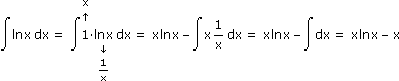

XII. INTEGRALRECHNUNG
A. Grundintegrale
B. Integrationsregeln
C. Partialbruchzerlegung
D. Bestimmte Integrale
E. Integralmittelwerte
F. Integralformeln
 Ergänzungen und Details
Ergänzungen und DetailsEine Stammfunktion von f(x), auch unbestimmtes Integral genannt, ist eine Funktion F(x), die abgeleitet f(x) ergibt. Schreibweise:
 f(x)dx := F(x) + c mit c
f(x)dx := F(x) + c mit c 
 (denken wir uns im Folgenden immer dazu)
(denken wir uns im Folgenden immer dazu)Unter Integrieren versteht man das Ermitteln der Stammfunktion. Das basiert wie gehabt auf zwei Säulen: auf bekannten Grundintegralen und Integrationsregeln. Im Unterschied zum Differenzieren artet Integrieren häufig in ein Probieren aus und es ist auch nicht gesagt, dass Funktionen, die aus elementaren Funktionen zusammengesetzt sind, ebensolche Stammfunktionen haben. Beispiel:
1
lnx
Die Liste der Grundintegrale ergibt sich aus den Ableitungen der elementaren Funktionen. Neu ist der Betrag im Logarithmus, da wir jetzt von der anderen Seite kommen und die Funktion 1/x für positive und negative x definiert ist.
|
• xrdx = xr+1 r+1 • 1 x • exdx = ex • cosxdx = sinx • sinxdx = –cosx • 1 cos2x • 1 √1 – x2 • 1 1 + x2 |
Die Integrationsregeln sind nur umgeschriebene Differenziationsregeln, was sich zeigt, wenn wir beide Seiten nach x differenzieren.
1 Linearität des Integrals
Das Integrieren ist ein linearer Operator in dem Sinn, dass
• f(x)+g(x)dx = f(x)dx + g(x)dx und kf(x)dx = kf(x)dx
Aufgabe 1: a) 5x + 2dx =
b) dx =
c) tan2xdx =
5x + 2dx =
b) 3√x + 3√x
3√x4
tan2xdx =a)
5x + 2dx = 5x1dx + 2x0dx = 5x2
2
x1
1
2 Integration durch Subsitution
Bei der Integration durch Substitution ersetzen wir einen Teilausdruck durch eine neue Variable und machen sie zur Integrationsvariablen:
• f(g(x))dx = f(u)
du
u'

u=g(x)
Aufgabe 2: a) cos3xdx =
b) tanxdx =
c) dx =
cos3xdx =
b) tanxdx =
c) e2x
ex + 1
a)
b)
c) Wenn x nicht von selbst wegfällt, müssen wir x als Funktion von u ausdrücken:
3 Partielle Integration
Bei der partiellen Integration brauchen wir als Integrand ein Produkt, wobei auch der neutrale Faktor 1 hilfreich sein kann:
• f'(x)g(x)dx = f(x)g(x) – f(x)g'(x)dx
Schreiben wir einen Faktor integriert über denselben und den anderen differenziert darunter, dann können wir uns das Ergebnis so merken:
Produkt der höherstehenden Funktionen minus Integral vom Produkt der neuerzeugten Funktionen.
Aufgabe 3: a) lnxdx = b) x2sinxdx = c) exsinxdx =
lnxdx = b) x2sinxdx = c) exsinxdx = a) 
b) Falls das neue Integral zwar einfacher, aber nicht unmittelbar lösbar ist, setzen wir den eingeschlagenen Weg fort:
c) Falls die Fortsetzung des eingeschlagenen Wegs wieder zum Ausgangsintegral führt, können wir dieses freistellen:
Anfang und Ende der fortlaufenden Rechnung:
exsinxdx = exsinx – excosx – exsinxdx +exsinxdx :2exsinxdx = exsinx – excosx
2
Polynom in x
Polynom in x
↗ Zählergrad < Nennergrad (allenfalls nach Polynomdivision)
↘ Nenner faktorisieren: x1 Nullstelle ⇒ (x–x1) teilt Polynom
Den Partialbruchansatz erfasst man am schnellsten anhand eines Beispiels:
x4 + 2x – 9
(x – 1)(x + 1)3(x + 2)
A
x – 1
B
x + 1
C
(x + 1)2
D
(x + 1)3
E
x + 2
Bem: Falls im Nenner quadratische, nicht faktorisierbare Faktoren überbleiben, tritt im Zähler Ax+B an die Stelle von A, sonst ändert sich nichts.
Um A, B,… zu bestimmen, rechnen wird den Partialbruchansatz zu einem Bruch zusammen, sodass die Nenner links und rechts übereinstimmen. Das müssen dann auch die Zählerpolynome tun und das tun sie nur bei gleichen Koeffizienten. Stattdessen können wir auch die Übereinstimmung in so vielen Kurvenpunkten verlangen, wie es braucht, um die Koeffizienten zu berechnen. (Wir können auch beide Methoden mischen.)
Aufgabe 4: dx =
2x – 8
x3 + 2x2
2x – 8
x2(x + 2)
A
x
B
x2
C
x + 2
Ax(x + 2) + B(x + 2) + Cx2
x2(x + 2)
(A + C)x2 + (2A + B)x + 2B
x2(x + 2)
Variante 1: Koeffizientenvergleich
|
x2: 0 = A + C x1: 2 = 2A + B x0: –8 = 2B |

|
A = 3, B = –4, C = –3 |
Variante 2: Punktevergleich
(Nullstelle) x = 0: –8 = B·2  B = –4
B = –4
B = –4
(Nullstelle) x = –2: –12 = C·4 C = –3
C = –3
(beliebiges) x = 1: –6 = A·3 + (–4)·3 + (–3)·1 A = 3
A = 3Bem: Auf den ersten Blick verwundert, dass wir für die Punkte die Nullstellen des Nenners verwenden, obwohl die Terme dort nicht definiert sind. Aber die Terme sind über ihrem Definitionsbereich nur gleich, wenn die Zählerpolynome gleich sind und die sind überall definiert. Im Zähler haben die Nullstellen des Nenners den Effekt, unmittelbar Ergebnisse zu liefern (und wir sparen uns das Ordnen nach Potenzen von x).
2x – 8
x3 + 2x2
1
x
1
x2
1
x + 2
4
x
Aufgabe 5: dx =
x – 9
x2 – 2x + 5
x2 – 2x + 5 = 0
x1,2 = 2 ± √(–2)2 – 4·5
2
 1 + 2j1 – 2j
1 + 2j1 – 2jQuadratische Nenner formen wir mittels quadratischer Ergänzung oder dem Satz von Vieta so um, dass x nur mehr einmal vorkommt:
Variante 1: x2 – 2x
 + 5 = (x – 1)2 – 1 + 5 = (x – 1)2 + 4
+ 5 = (x – 1)2 – 1 + 5 = (x – 1)2 + 4Variante 2: x2 – 2x + 5 = [x – (1 + 2j)][x – (1 – 2j)] = [(x – 1) + 2j][(x – 1) – 2j] = (x – 1)2 + 4
Flächeninhalte erhalten wir durch "Austapezieren" mit Flächeneinheiten bzw. Bruchteilen davon. Das Riemann-Integral definiert den Flächeninhalt zwischen der Kurve einer beschränkten Funktion f(x) und der x-Achse über dem Intervall [a, b] so:
|
mit Δx := max{|Δxi|} und xi+ [xi,xi+1]
|
Zum Grenzwert: Dieser ist so definiert, dass für jede Folge von Unterteilungen-mit-Stützstellen mit Δx
 0 die Riemann-Summen gegen dieselbe Zahl laufen müssen. Man kann zeigen, dass ein solcher Grenzwert existiert, wenn f(x) im Intervall [a, b] nur endlich viele Unstetigkeitsstellen hat.
0 die Riemann-Summen gegen dieselbe Zahl laufen müssen. Man kann zeigen, dass ein solcher Grenzwert existiert, wenn f(x) im Intervall [a, b] nur endlich viele Unstetigkeitsstellen hat.Dass zwischen dem, was wir intuitiv als Fläche wahrnehmen, und dem Riemann-Integral nichts mehr hineinpasst, erkennen wir über Unterteilungen mit Stützstellen, die so liegen, dass sie den kleinsten/größten Funktionswert im jeweiligen Intervall haben. Diese Unter/Obersummen sperren die zu definierende Fläche zwischen sich ein und laufen für Δx
0 gegen dieselbe Zahl.Die beim bestimmten Intergral angegebenen Grenzen sind so zu verstehen, dass immer von der unteren zur oberen gezählt wird – unabhängig davon, was links/rechts liegt. Laut Definition ist das Integral ein Flächensaldo: Falls von links nach rechts integriert wird, zählen Flächen über der x-Achse positiv und solche darunter negativ. Falls von rechts nach links integriert wird, ist es andersrum.
Aufgabe 6:
2 Hauptsatz der Diff-Int-Rechnung
Wenn wir im Fall einer stetigen Funktion f(x) die untere Integrationsgrenze bei 0 (oder sonstwo) festhalten und die obere variieren, erhalten wir eine Funktion F0(x), die abgeleitet wieder f(x) ergibt:

F0(x) ist also Stammfunktion von f(x) und unterscheidet sich von jeder anderen Stammfunktion F(x) nur durch die Integrationskonstante:

Aufgabe 7: Berechne die Fläche zwischen f(x) = cos4xsinx und x-Achse für 0 ≤ x ≤ π.
Lösungsvariante 1:
0πcos4xsinxdx = (*)
cos4xsinxdx = (*)Lösungsvariante 2:
Auch wenn wir das Integral als Flächeninhalt eingeführt haben, repräsentiert der letztlich das Produkt der auf den Achsen aufgetragenen Größen:
Aufgabe 8: Die Terme vi(t) liefern die Fallgeschwindigkeiten zweier Körper so wie unten dargestellt. Wie berechnet man den schraffierten Bereich und welche physikalische Bedeutung kommt ihm zu?
Fläche zwischen Kurve und x-Achse =
010 v(t)dt = 010 s'(t)dt = s(10) – s(0) = Strecke in m, die der Körper in den ersten 10 s fällt Fläche zwischen beiden Kurven =
010 v1(t)dt – 010 v2(t)dt = Strecke in m, um die Körper1 in den ersten 10 s weiter fällt als Körper2Das für horizontal und vertikal "eingekastelte" Funktionskurven definierte Riemann-Integral erweitern wir darüber hinaus wie folgt:
• Uneigentliches Integral 1. Art, falls der Integrationsbereich ins Unendliche reicht:
• Uneigentliches Integral 2. Art, falls im Integrationsbereich eine Polstelle c liegt:
Aufgabe 9:
Frage: Könnten wir beispielsweise in c) statt dem uneigentlichen Integral auch die Riemann-Definition auf das Intervall ]0,1] anwenden?
Nein, weil der Grenzwert nicht existiert: x0 = 0, x0+ =
1
n4
1
n
 ∞)
∞)
• Das arithmetische Mittel x der Zahlen x1,… xn ändert deren Summe nicht, wenn es an die Stelle jedes Summanden tritt.
x1 + … + xn = x + … + x = nx
x = 1
n
 ni=1xi
ni=1xiSchneller lässt sich das arithmetische Mittel berechnen, falls die Zahlen in Form einer Häufigkeitstabelle vorliegen:
| x1 | n1-mal |
| ··· | ··· |
| xm | nm-mal |
x = 1
n
mj=1xjnj mit n = mj=1njDas verallgemeinern wir zum gewichteten arithmetischen Mittel, indem wir die nj durch irgendwelche Gewichte wj ersetzen:
x =
1
w
mj=1xjwj mit w = mj=1wj
Aufgabe 10: Zeige, dass bei der linearen Interpolation die zur Interpolationsstelle benachbarten Werte, gewichtet mit dem Abstand der jeweils anderen Stelle zur Interpolationsstelle, gemittelt werden.
y(x) =
y2 – y1
x2 – x1
xy2 – x1y2 – xy1 + x1y1 + x2y1 – x1y1
x2 – x1
y1(x2 – x) + y2(x – x1)
x2 – x1
y1w1 + y2w2
w1 + w2
2 Linearer Mittelwert einer Funktion
• Den Integralmittelwert f der Funktion f(x) über [a,b] charakterisieren wir wie eingangs, indem wir "Summe" durch "Integral" ersetzen.
abf(x)dx = abfdx = f(b – a) f = abf(x)dx
f(x)dx = abfdx = f(b – a) f = 1
b – a
f(x)dxDer Gleichanteil einer periodischen Funktion f(t) ist der Intergralmittelwert über eine Periode, der Effektivwert von f(t) ist die Wurzel aus dem Mittelwert von f2(t) über eine Periode.
Aufgabe 11: Bestimme den Gleichanteil von P(t) = i(t)u(t), wenn
i(t) = Îsinωt und u(t) = Ûsinωt
(*) =
2π0 = π =
ÎÛ
2π
–sinucosu + u
2
ÎÛ
2π
ÎÛ
2
Bem: Dass sin2x den Gleichanteil 1/2 hat, sieht man auch so:
cos2x = cos2x – sin2x = (1 – sin2x) – sin2x = 1 – 2sin2x sin2x = – cos2x
1
2
1
2
3 Kepler/Simpson'sche Regel
Auf Kepler geht die Regel zurück, dass der Integralmittelwert einer quadratischen Funktion über [a,b] als gewichtetes Mittel berechenbar ist, indem die Funktionswerte an den Rändern einfach und in der Mitte vierfach gewichtet werden.
Die Simpson'sche Regel nützt das zur näherungsweisen Berechnung bestimmter Integrale: Gleich weit auseinanderliegende Stellen liefern zum einen Funktionswerte und zerlegen zum anderen den Integrationsbereich in Teilintervalle. Jeweils zwei davon werden zusammengefasst und die Fläche darüber mit obigem Integralmittelwert geschätzt.
Aufgabe 12: Bestimme 15dx näherungsweise mithilfe der Simpson'schen Regel und 4 Teilintervallen.
ex
x
Zum Vergleich der exakte Wert: 38,29
Es geht darum, einen Grenzprozess als solchen einer Riemann-Summe zu erkennen und dementsprechend als Integral zu schreiben:
Aufgabe 13: Bestimme a) die Integralformel für das Volumen des Körpers, der durch Drehung der Fläche zwischen f(x) und a ≤ x ≤ b um die x-Achse entsteht, und damit b) die Formel für das Kugelvolumen.